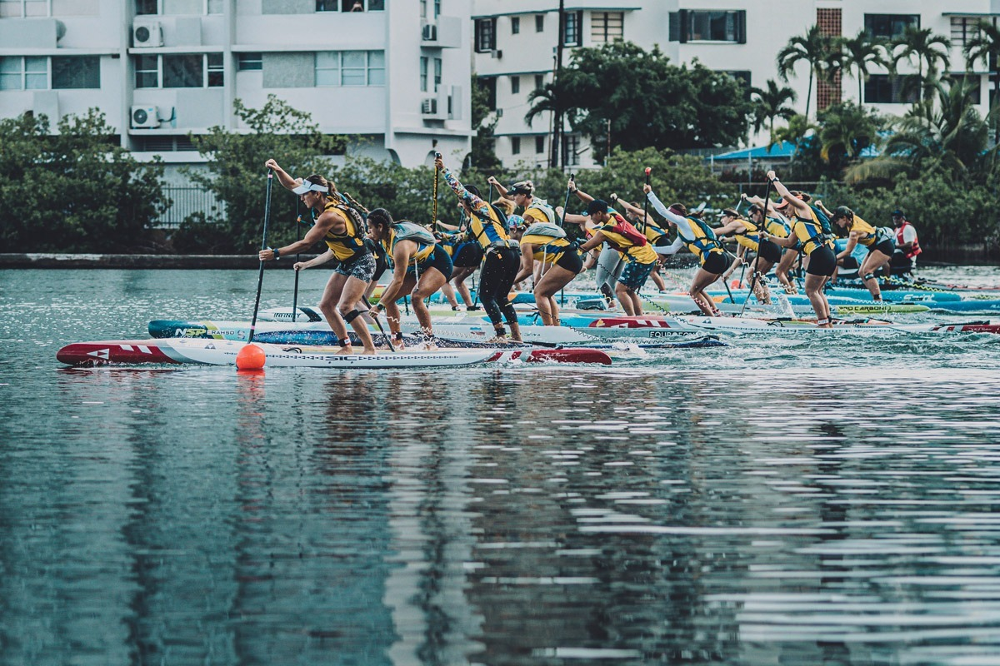

SUP Racing
Ταχύτητα, ισορροπία και αγωνιστική τεχνική.
ΝΑΥΤΙΚΟΣ ΟΜΙΛΟΣ ΠΑΜΒΩΤΙΔΟΣ
Stand Up Paddle Racing, εκμάθηση και προπόνηση στην Παμβώτιδα.

Το Stand Up Paddle Racing είναι η πιο απαιτητική και γρήγορη μορφή της όρθιας σανιδοκωπηλασίας, όπου οι αθλητές συναγωνίζονται σε ταχύτητα σε ανοιχτή θάλασσα, λίμνες ή ποτάμια.
Στον ΝΟΠ το SUP αποτελεί οργανωμένο τμήμα αθλητισμού και δραστηριότητας στη λίμνη Παμβώτιδα, με έμφαση στην τεχνική, την ασφάλεια και τη σταδιακή αγωνιστική εξέλιξη.
Για το θεσμικό πλαίσιο του αθλήματος στην Ελλάδα, ο ΝΟΠ παραπέμπει στην Ελληνική Ομοσπονδία Κανόε Καγιάκ.
Επίσημη σελίδα SUP της Ομοσπονδίας →Ταχύτητα, ισορροπία και αγωνιστική τεχνική.
Η Παμβώτιδα ως φυσικό προπονητικό περιβάλλον.